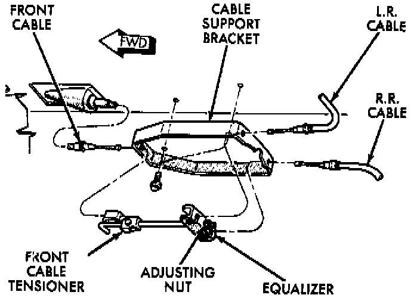
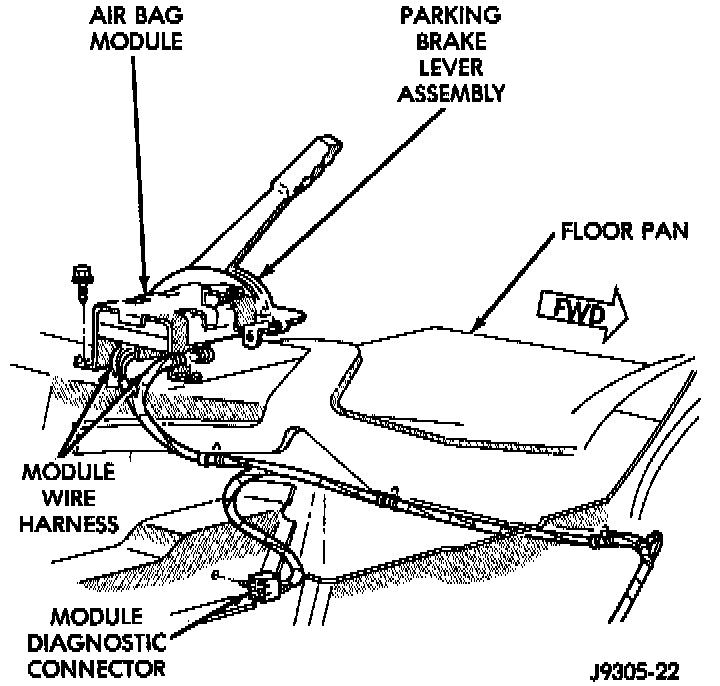

Parking Brake Lever: Service and Repair
REMOVAL1. Release parking brakes.
2. Disconnect battery negative cable.
3. Raise vehicle on hoist.
Parking Brake Equalizer:

4. Remove front cable adjusting nut and disengage cable tensioner from equalizer. Then remove front cable from tensioner.
5. Disengage front cable from insert and insert from floorpan.
6. Lower vehicle.
7. Remove center console.
8. Disconnect parking brake switch and air bag module wiring connectors.

9. Remove screws attaching air bag control module to floorpan and parking brake lever. Then move module aside for access to lever.
10. Remove screws attaching parking brake lever to bracket and lift lever upward for access to front cable.
11. Disengage front cable from parking brake lever and remove lever assembly from vehicle.
INSTALLATION
1. Connect front cable to lever assembly.
2. Seat front cable in floor pan.
3. Install lever assembly on mounting bracket. Then tighten mounting screws to 10-14 Nm (7-10 ft. lbs.).
4. Connect parking brake switch wire.
5. Install air bag control module and connect module wires harnesses.
6. Install parking lever cover.
7. Install center console.
8. Raise vehicle.
9. Assemble front cable, cable tensioner and cable bracket.
10. Adjust parking brake front cable. Adjustments
11. Lower vehicle.
12. Connect battery negative cable.